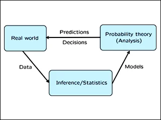

In this class, the main objective is to not only understand calculating statistics, but to also fully understand how certain ideas are formulated. As such, a large portion of the class is centered around probability calculations and proofs. Some of the proofs are for more generalized uses like developing confidence intervals for different parameters, while others are specifically targeting theorems, like the Central Limit Theorem.
At this moment, the class is going over various concepts related to confidence intervals, such as deriving confidence intervals for large samples, or discussing how to properly interpret interval results. In the near future, the class will move onto hypothesis testing and Z and t tests for means.